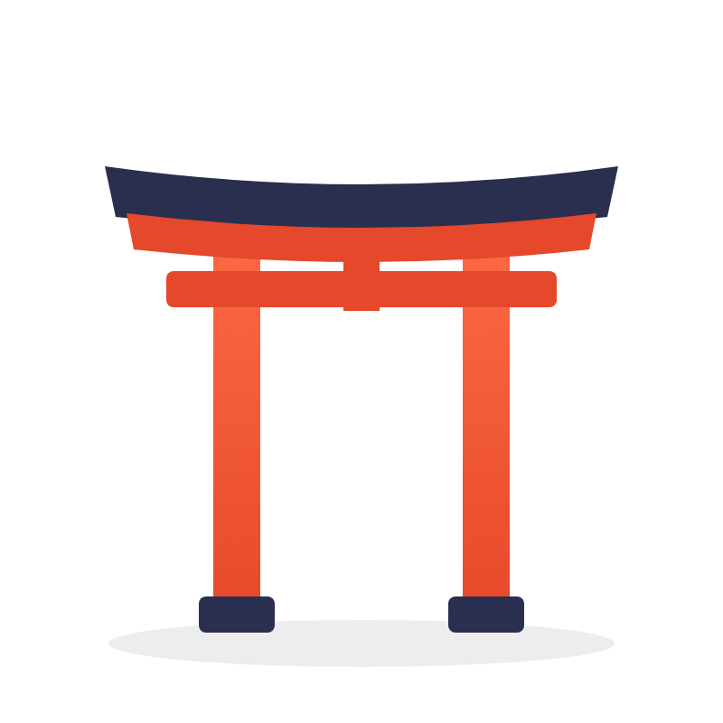
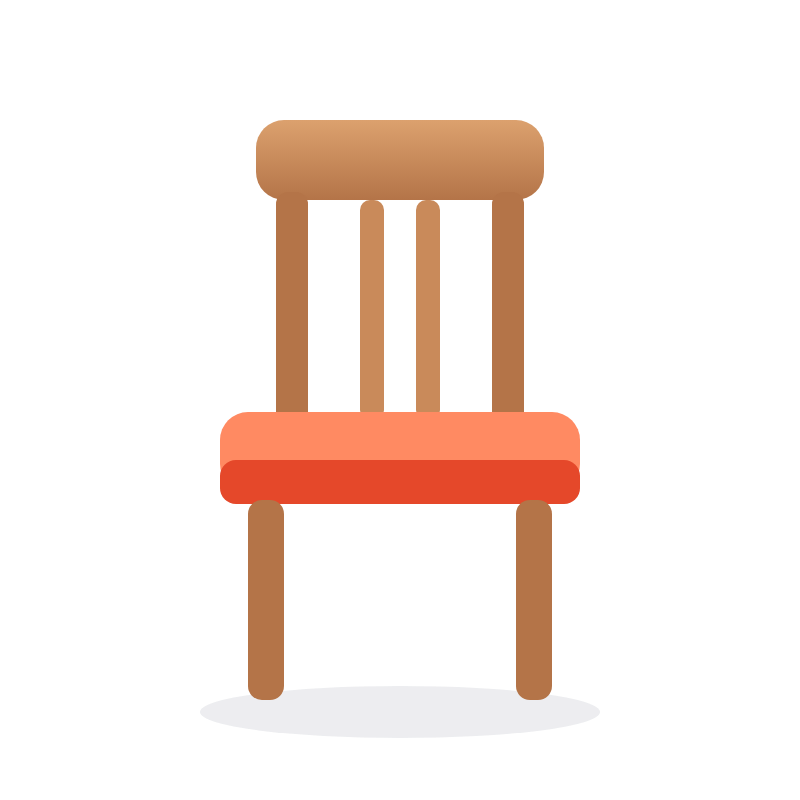
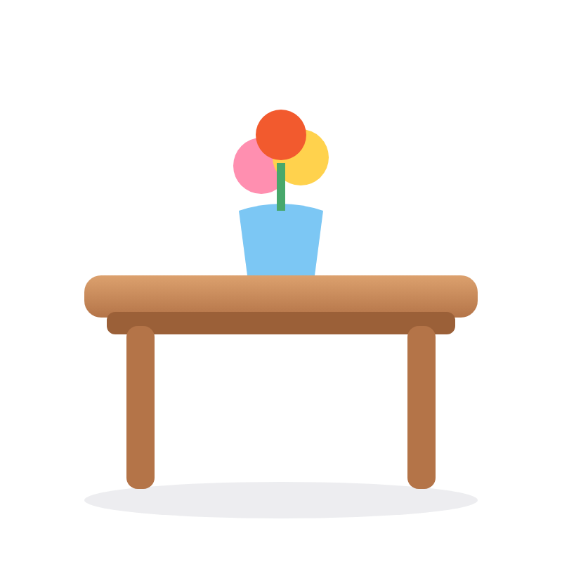
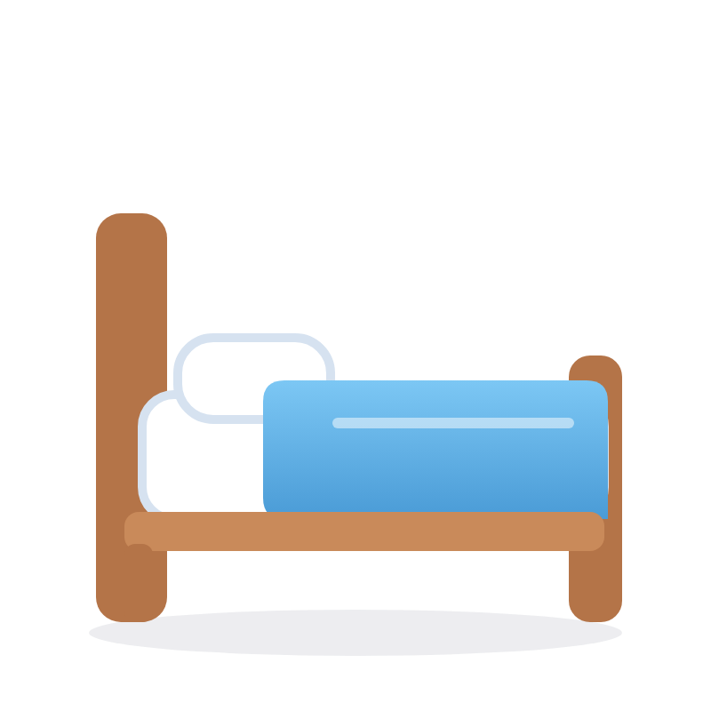
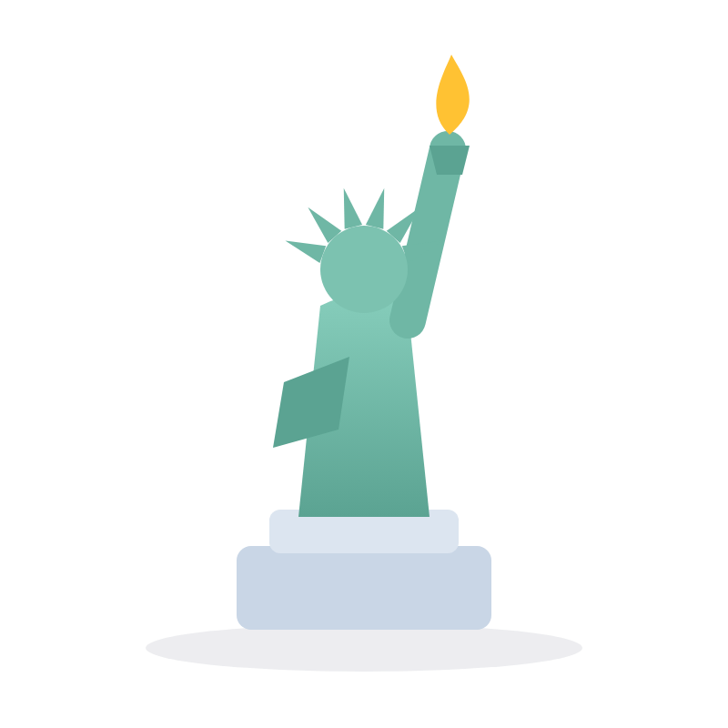
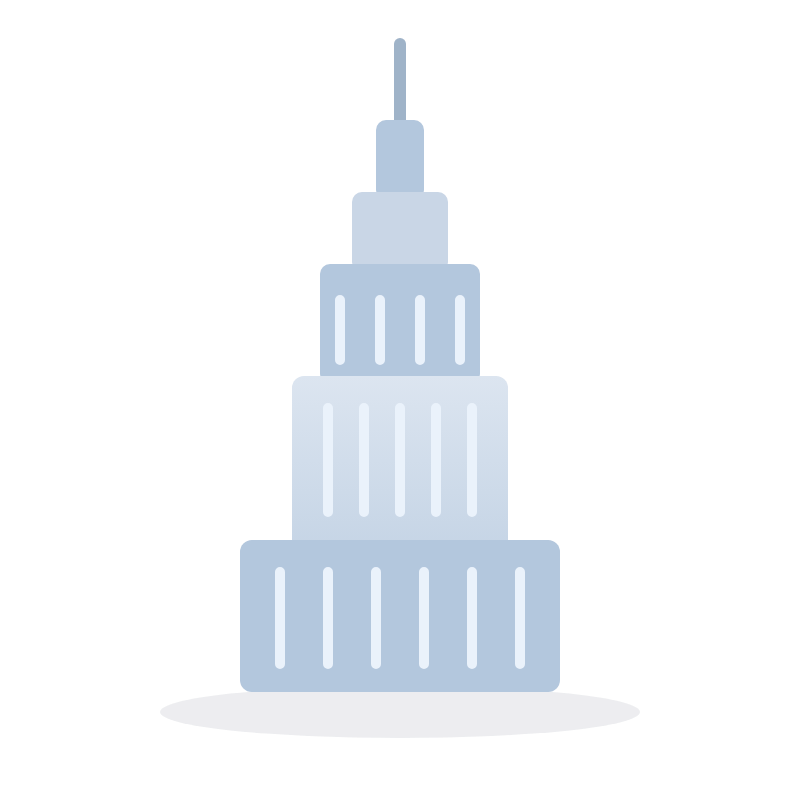
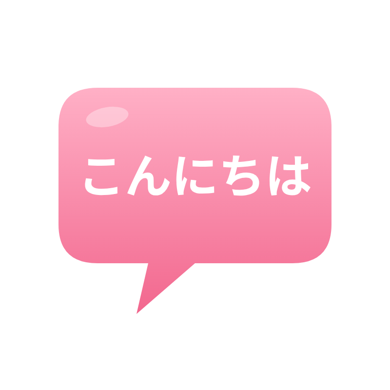

文法解説動画
冠詞 Part 3
無冠詞：冠詞をつけないパターン

文法解説動画
無冠詞：冠詞をつけないパターン
複数名詞movies

まとめて指す名詞furniture

固有名詞Kyoto

言語English

食事breakfast
祝日・ホリデーHalloween
「オンラインで家具を買ったんだ」
「オンラインで家具を買ったんだ」
答えI bought furniture online.
理由家具は1つとは限らない（一発では分からない）→ 不特定なので無冠詞
POINT

chair

table

bed
sofa
まとめて furniture（家具）
1家具をまとめて指す言葉。
s はつかないけど、いくつかの家具のこともある
2数えられない名詞なので、a も s もつけない
× a furniture × furnitures
31点だけ言いたいときは
a piece of furniture（家具1点）
POINT
I bought furniture online.
オンラインで家具を買った。
不特定の家具
（1つとは限らない）
I bought the furniture online.
その家具をオンラインで買った。
話し手と聞き手が分かる
特定の家具
× I bought a furniture online.
1点なら a piece of furniture（家具1点）
furniture は数えられない
名詞なので a はつけない
POINT
有名な建物・作品など

the Eiffel
Tower
エッフェル塔

the Statue
of Liberty
自由の女神

the Empire
State Building
エンパイア・ステート・ビル
the Mona
Lisa
モナ・リザ
I'm studying English.
私は英語を勉強しています。

I speak Japanese.
私は日本語を話します。
ポイント言語の名前には、a / an も the もつけない
I had breakfast at seven.
7時に朝ごはんを食べました。

Let's have lunch together.
一緒にお昼ごはんを食べよう。

What's for dinner?
夕ごはんは何？
覚えておこう朝食・昼食・夕食は、基本は無冠詞
What are you dressing up as for Halloween?
ハロウィンはどんな仮装をする？

Christmas is my favorite holiday!
クリスマスは私の一番好きなホリデーです！